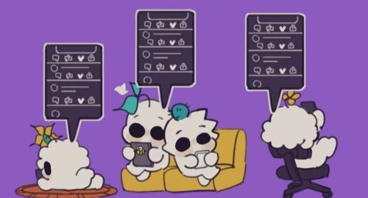

Book an online session with one of our therapists
We will connect you with a professional, licensed and vetted therapist in an online session room. You can message your therapist anytime, and you can also schedule a weekly phone, video, or live chat session with your therapist. With the support of our network of more than 80 competent mental health specialists representing a wide range of different modalities and techniques, you can make an informed decision.
Weekly sessions start at 1 hour and go up to 2 hours of online session room, call, or live chat. You can pay through a variety of easy online payment methods.
Alba specializes in online group therapy
Join Alba virtual group session. Each group is facilitated by a certified therapist and has a maximum of 12 participants.Alba uses the information provided by the user to connect them to people in a new group who have similar needs instead of adding them to an existing group. To make improvement, this group meets once a week/month for 90 minutes. Sessions are science-based using cognitive behavioral therapy interventions. If your needs change, you can amend your monthly plan at any moment to better suit them, whether you want one group session per week or one per month. The cost to join is minimal compared with other platforms. Anyone who is new to therapy and wants to test it out without making a major commitment may afford it because you can cancel at any moment.

Online Couples Sessions
Alba will help every couple who wants to work on themselves both as individuals and as couples through a professional and scientific-based online sessions. Alba enables people to work on their relationships at their own pace, at a suitable time, and from a location that suits them by giving them online access to qualified therapists. Alba provides access to therapists through messaging if you’re not comfortable with video chats. The length of the sessions might range from 45 minutes to two hours for couples. Depending on your budget, Alba gives you access to various session times.
Specialized Therapists For Teenagers
Special Programs with special prices for online teenagers sessions! Prioritizing mental health during adolescence is crucial. By the age of 15, over half of all significant mental health issues manifest, and by the age of 18, three-quarters do as well. A person's quality of life will improve as time passes if therapy is started as soon as a condition is identified. Alba provides a-weekly plan of one-hour online sessions with 30% off only for teenagers. Alba also provides call sessions and live chat sessions. The most practical and economical method to improve your mental health! From the convenience of your device, you may find a qualified therapist in your state and receive continuing assistance through encrypted chat and live video sessions.
For detailed payment and timing information, please contact us!